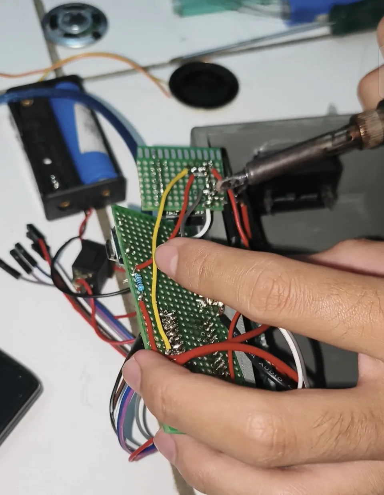
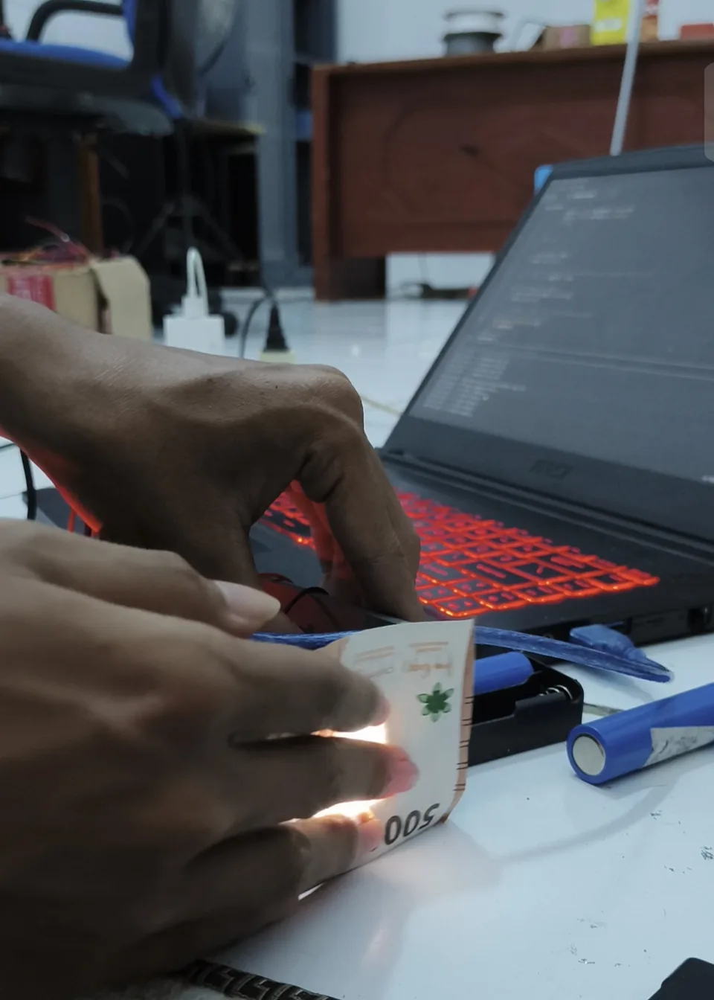

Ringkasan
TekSif — Chromoney dikembangkan berdasarkan rancangan Kelompok 4 Pendidikan Khusus Universitas Lambung Mangkurat. Tujuannya adalah membantu pengguna tunanetra mengenali nominal uang saat melakukan transaksi sederhana.
Rancangan menggunakan sensor warna untuk membaca ciri uang serta speaker sebagai keluaran informasi suara. Komponen pendukung meliputi tombol fisik, PCB dot matrix, baterai, modul pengisian daya, dan casing.
Fitur utama
Pengenalan nominal uang
Sensor warna menjadi input pengenalan ciri uang. Pembacaan diproses untuk menentukan nominal yang akan disampaikan kepada pengguna.
Informasi melalui suara
Keluaran speaker membantu pengguna memperoleh informasi nominal tanpa mengandalkan penglihatan.
Implementasi
Wiring PCB & integrasi sensor
Menghubungkan sensor warna, tombol, modul audio, dan catu daya pada PCB. Rangkaian dirakit agar dapat ditempatkan dalam casing alat.
Pemrograman Arduino IDE (.ino)
Sketch .ino menangani pembacaan sensor dan respons alat, termasuk keluaran suara untuk hasil pengenalan nominal.
Perakitan & percobaan pembacaan
Dokumentasi mencakup penyolderan dan wiring pada PCB serta percobaan pembacaan uang saat alat terhubung ke laptop.
Galeri
Hasil alat, proses pengerjaan, dan konteks lapangan. Pilih foto untuk memperbesar; gunakan tombol panah atau swipe untuk menjelajah.




